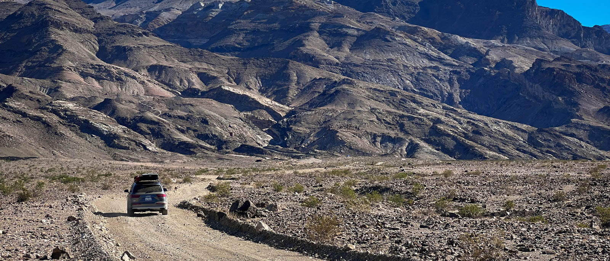

Death Valley and Eastern Sierra

Itinery
- Day 1: Home -> {Lake Isabella} -> Ridgecrest
- Day 2: -> Furnace Creek -> Badwater Basin -> Zabriskie Point -> Dante's View -> Furnace Creek campground
- Day 3: -> Keane Wonder Mine -> Rhyolite Ghost Town -> Alabama Hills -> Lake Sabrina -> Bishop
- Day 4: -> Erick Schat's Bakery -> Brees Lookout (Hot Creek Geological Site) -> June Lake & Silver Lake -> Tuolume Meadows -> Home
Day 1
아내의 수업이 끝나고 챙기고 집에서 출발하니 1시 가까이가 되었네요. 첫날은 일단 데스벨리 안으로 들어가기엔 시간이 여의치 않아서 입구 근처에 있는, 그래도 두시간은 떨어져 있는 Ridgecrest에 숙박을 잡았습니다.
첫날은 그냥 I-5 로 이동만 하다가 밤이 되어버렸습니다. Tehachapi 로 넘어갈 줄 알았는데 구글맵이 Kernville 방향 (Lake Isabella)으로 가라고 해서 그쪽으로 방향을 틉니다. 안가본 길이라 이사벨라 호수 방향으로 들어갔는데, 처음과 끝 부분이 길이 너무 꼬불꼬불해서 아이들이 멀미를 해서 좀 고생했네요. 이사벨라 호수 근처부터는 해가 져서 어두운 산길을 운전해야 했습니다.
왠만하면, 큰 일 없으면 Tehachapi 를 통해서 가는게 낫겠습니다 :)
Ridgecrest에 도착해서 Denny's 에서 거하게 저녁먹고 바로 취침.
Day 2
아침 느긋하게 일어나서 숙박시설에서 제공해 주는 아침을 든든하게 먹었습니다. Hampton Inn은 아침을 제공해 줘서 좋더라구요. 숙박시설을 나와서 마트에서 점심으로 해 먹을 샌드위치용 빵, Ham slice, 잼, 치즈, 야채를 사고 데스벨리로 출발. 식재료는 냉장고에 보관해서 신선하게 유지할 수 있었네요.
캠핑 다닐때 마다 제일 만족하는 게 12V용 아웃도어 냉장고입니다. 얼음을 채울 필요도 없어서 공간 낭비도 없고, 며칠이 지나도 바닥에 물이 고이질 않고 (얼음을 넣질 않으니), 차량으로 이동하면서 배터리 충전해서 전기 걱정도 없어요. 캠핑 자주 다니는 사람에게 강추하고 싶은 제품입니다.
Ridgecrest에서 데스벨리 가는 길에 Trona Pinnacles라는 오버랜딩으로 유명한 지역이 있어요. 독특한 바위로 유명한 곳인데, 거길 가려면 흙길로 좀 들어가야 해서 시간 관계상 이번엔 패스했네요. 내년엔 꼭 가보기로...
Ridgecrest에서 데스벨리 Furnace Creek Visitor Center에 가는데만 두시간이 걸려요. 그 사이엔 마을다운 마을이 없어서, 둘째날 두시간을 가는 수 밖에 다른 방법이 없더라구요. 산을 넘으면서 풍경이 확 달라집니다. Panamint Valley에 들어서면 데스벨리의 광활한 자연을 느낄 수 있어요.
그리고 얼마 더 운전을 하면 데스벨리의 입구가 나옵니다. 여기서 혼자서 가족 사진 셀카를 스마트폰으로 찍으려는 관광객 가족에 도움을 주고 (사진을 찍어주고) 우리 가족도 기념 사진을 찍습니다. 입구라곤 하지만, 이전과 풍경이 다를바 없긴 하네요.

Furnace Creek 가기 바로 전 Harmony Borax Works 사이트에 들렀습니다. 계획은 Badwater Basin에 가서 점심을 먹는 거였는데, 시간이 좀 걸리고 다들 배가 고파서 Borax Works에서 점심을 먹기로 합니다. 점심은 아침에 그로서리 스토어에서 산 재료로 샌드위치를 만들어서 먹었네요. REI에서 구입한 테이블이 요긴하게 쓰입니다.
Borax Works는 말 그대로 Borax를 캐서 만들던 사이트인데, 거의 폐허 수준으로 남아있네요. 아이들이 슬라임 만들때 쓰던, 그리고 바퀴벌레 잡는데 특효약인 보랙스가 100년전에 데스벨리에서 만들어졌고, 그 회사 이름이 보랙스였다는 사실에 충격!
그 뒤로 아이들이 데스벨리에서 노란색 땅만 보이면 보랙스라고 외치고 다니더라구요.
Furnace Creek Visitor Center에서 4학년 프리패스를 플라스틱 카드로 교횐하고 곧장 Badwater Basin으로 이동했습니다. 배드워터는 데스벨리에서 아마도 가장 유명한 곳이 아닐까 싶네요. 미국에서 가장 낮은 땅인데 (동굴 빼고), 실제로 가서 보면 "SEA LEVEL" 간판이 너무 위에 있어서 놀랍니다.
그리고 배드워터 지역의 흙이 소금흙이라는 사실에 더 놀라고, 그 비 거의 오지 않는 데스벨리에 배드워터에 물이 고여있다는 사실에 한번 더 놀라네요. 우리가 갔던 10월에도 종종 100도(섭씨 40도)를 찍는 곳인데 물이 그늘에도 아니고 뙤약볕에 남아있는 모습이 정말 불가사의네요.
Furnace Creek 방향으로 다시 돌아오는 길에 Artist Pallete에 들렀습니다. 층층이 다양한 색상으로 알록달록한 산을 볼 수 있는 곳인데, 그 지형보다는 들어가고 나오는 길이 멋집니다. 특히 나오는 길은 큰 바위가 길 양쪽에 우뚝 솟아있고 그 사이를 운전하며 나오는 길인데, 정말 멋지더라구요. 사진으로는 그 멋있는게 잘 표현이 안됩니다. 사실 데스벨리 대부분이 그렇더라구요. 그 광활한 크기가 사진에는 표현이 안되요.
바닥 탐험은 이쯤에서 그만하고, 이제 산 위로 올라가서 구경을 합니다. Zabriskie Point는 Furnace Creek에서 가까워서 먼저 들르고 그 다음 배드워터에서 보이는 산 꼭대기인 Dante's View를 갔습니다.
Zabriskie point는 정말 독특한 침식 지형이 펼쳐진 곳이네요. 별로 높이 올라오지도 않았는데 거기서 보이는 벨리 모습이 멋있습니다.
Dante's View는 배드워터 바로 위의 산인데, 그 높이가 5000피트가 넘어요. 가장 낮은 땅인 배드워터가 해수면 밑으로 282 피트니, 아무튼 그 높이 차이가 1500미터가 넘는 셈이죠. 거기서 보이는 벨리 모습은 광활하고, 경이롭습니다. 미국 땅이 크다는 걸 절실히 느끼는 곳이더라구요.
몇 장소 보지 못했지만, 하나 하나 이동시간이 정말 오래 걸리네요. 데스벨리 들어오는 데만 두시간 반, 거기서 배드워터 30분, 돌아나오고 아티스트 팔렛 구경하고 단테 다녀오니 거의 저녁이 되어버렸습니다.

오늘은 Furnace Creek의 캠핑장에서 캠핑을 합니다. 보통은 10월엔 너무 더워서 캠핑을 하기 힘들다던데 저희가 여행하던 기간에는 낮 90도 정도로 선선한 편이라 (?) 캠핑을 하기로 했습니다. 아이들이 캠핑을 워낙 좋아하기도 하구요.
이번에 새로 구입한 가젤 T4 (Gazelle T4) 오버랜드 에디션 텐트를 처음으로 써봅니다. 윗 사진들에서 봤듯이 5피트가 넘는 길이라 차 안에 넣어서 온게 아니라 루프랙에 묶어서 왔어요. 묶은 끈 풀고 땅에 내려놓은 뒤 설치까지 2분도 안걸린 듯 합니다. 지퍼 열고 바닥 타프 펼치고 그 위에 텐트 허브 네개 잡아 당기고 안에 들어가서 천장 올리니 끝. 바람이 좀 불면 스테이크를 박을텐데 그럴 필요도 없어서 매우 간편하네요.
기존 텐트 (Coleman Montana 8)가 텐트 치는데 욕 나올 정도로 불편해서 구입한 인스턴트텐트인데 대만족입니다. 내부도 4인용 치곤 넓은 편이고 (거의 5인용 수준), 천장은 성인이 일어서도 머리가 닿지 않아요. 지퍼도 YKK 지퍼라 걸림없이 편하게 여닫을 수 있더라구요. 아무튼 잘샀다는 생각이 듭니다. 루프랙에 묶고 다니니 뽀대도 나는듯 하고.. ㅎㅎ
텐트 치고 저녁먹고 아이들과 이야기하며 별 보다가 잠들었네요. 기존에 쓰던 매트가 퀸 매트 두개인데, 두개가 가젤텐트에 들어가지 않아 하나는 바람을 좀 빼고 접을수 밖에 없었습니다. 제가 거기서 잤는데, 덕분에 아이들이 조금만 움직여도 출렁출렁, 제 등, 엉덩이는 쿠션없이 맨땅, 다리만 붕 뜬 자세로 선잠을 잤네요. 킹 에어매트리스 사야지... (결국 킹 에어 매트리스 없어서 Exped MegaMat 10 구입했네요. 이것 리뷰는 다음 기회에)
Day 3
밤사이 춥진 않아서 텐트 레인플라이를 덮지도 않았는데 따뜻하게 잤네요. 아침은 간단하게 에그스크램블과 소세지. 보통 캠핑을 오면 먹는데 집중하지 않고 먹는 것은 열량을 채우는게 목적으로 간단하게 먹는편입니다. 아이들이 매번 에그스크램블에 베이컨을 먹었던 터라 이번엔 마트에서 소세지를 샀는데, 아이들이 짜고 맵다고 하네요. 다시 다음부터는 베이컨으로 아침을 먹어야겠어요.
먹고 씻고 짐 정리한 후 텐트 접으니 9시 반정도. 오늘은 어제 못간 Titus Canyon을 갈까 하다가 아이들과 아내가 보고 싶어했던 탄광과 고스트 타운을 보고 데스벨리 여행은 마무리 하기로 했습니다. Titus Canyon은 다음에 제대로 된 오프로드 차량을 구해서 다시 와야겠습니다. 아니면 오토바이로 오던지...
고스트 타운 가는길에 데스벨리에서 가장 접근하기 쉬운 Keano Wonder Mine을 들렀습니다. 이 버려진 탄광은 메인도로에서 3마일(5.5km)정도 흙길을 타고 들어가야하는 데, 자갈이 잘 깔린 길이라 흙먼지 날리며 시원하게 달렸네요. 이걸 멀리서 드론으로 찍으면 멋졌을텐데, 드론을 조정하며 운전할 수가 없어서 아쉽습니다. 아내에게 차를 맡기고 멀리서 스마트폰으로 영상을 찍었는데, 아내는 속도를 못내고 엉금엉금 오니 흙먼지 날리는 모습을 영상에 담을 수가 없었어요. ㅎㅎ
탄광에 도착해서 걸어가다보면 근처가 탄광임을 알리듯이 바닥에 반짝반짝 돌이 많이 보입니다. 탄광은 내부가 불안정해서 들어갈 수는 없어서 아쉬웠지만 탄광에 걸어가며 보이는 경치가 멋지네요!
다음 장소인 Rhyolite 고스트 타운은 데스벨리 경계 바로 바깥에 있습니다. 그 다음 목적지인 Alabama Hills 쪽 방향과는 정 반대라 고스트 타운을 구경하고 데스벨리를 다시 가로질러 가야 했네요.
데스벨리 안에 고스트 타운이 여러개 있는데 Rhyolite이 가장 접근성이 좋아요. 흙길을 타고 갈 필요도 없이 마을내에까지 포장도로가 연결되어 있어요. 다른 여러 고스트 타운은 흙길로 가야하거나 아예 오프로드 험한 길을 지나서 가야만 하는 곳이 대부분이더라구요. 그런 곳은 다음에 오프로드 차 장만하면 가기로...
데스벨리가 탄광으로 한창 성행할 때 가장 많은 사람이 살았던 마을이라는 데 지금은 일반 주택은 다 무너지고 몇몇 벽돌로 지어진 건물의 외벽만 겨우 남아있는 수준이네요. 그중 가장 두드러지는게 은행 건물인데, 그 크기를 보면 마을이 꽤 컸었다는 걸 느낄 수 있어요.
이렇게 데스벨리를 마무리 하고 Lone Pine으로 이동합니다. 데스벨리를 가로로 가로질러야 하는데, 그 시간만 두시간이 걸리네요. 정말 크긴 큽니다. 그 광활함은 직접 가서 보기 전까진 이해하기가 힘들것 같아요.
지난 봄에 오지캠핑했던 앨러배마힐스에 들러 점심(그래봤자 가벼운 샌드위치)을 먹고 여유있는 척 커피를 마셨습니다. 다 컨셉이죠 ㅋㅋ. 일정에 쪼들려 커피 겨우 마시고 이번 여행의 주 목적, 단풍구경을 하러 갔네요. 진정한 찍고 땡! 여행이랄까요...

지난번 캠핑에선 앨러배마 힐스 입구근처에서 돌아다녔는데, 이번엔 아예 주구장창 흙길을 이용해서 북쪽으로 갔습니다. 그렇게 이동하는 차는 우리밖에 없었고 간간히 오프로드를 즐기는 바이크들이 지나가더라구요. 길이 나쁘지 않아서 여기서도 신나게 밟았습니다. 덕분에 차량은 이제 거지꼴을 면치 못하게 됐네요. SUV를 장만하고 처음으로 제대로 SUV답게 즐기고 있는 것 같아요.
Alabama Hills에서 Bishop가는 길은 395번 도로를 타고 올라갑니다. 이 도로가 아름답기로 유명한 도로죠. 캘리포니아 서쪽 해안가에는 1번 도로가 있다면 동쪽에는 이 395번 도로가 있죠. 캘리포니아의 양쪽 끝을 남북으로 가로지르는 멋진 도로입니다.

단풍 구경은 Bishop 근처에 있는 Lake Sabrina와 그 근처에서 했는데, Lake Sabrina는 이미 단풍 정점을 지나 잎이 다 떨어져있었네요. 그럼에도 불구하고, 가뭄으로 물이 거의 빠져버린 호수지만, 풍경은 끝내줬습니다. 오후 늦게 햇살이 산능선을 넘어가며 뿌려진 빛이 시에라 산맥을 수묵화로 바꿨고, 잔잔한 호수에 비치는 산자락의 단풍이 수채화를 만들고 있었어요.
Bishop에 도착해선 저녁을 먹으러 일본식 레스토랑 Yamatani Japanese Restaurant에 갔어요. 아이가 스시를 좋아해서 영양 보충좀 할 겸 들렀는데, 우리 가족 앞에 한 팀이 기다리고 있었어요.
테이블이 준비가 안되었다고 해서 Waiting List에 이름을 올리곤 기다리는 데, 우리 뒤로 사람이 점점 줄을 서더라구요. 그 사이에 주인은 아무 응대도 하지 않고 (waiting list에 이름조차 안올려줌), 그저 전화기만 붙잡고 있었네요. 전화 오더만 열심히 받고, 그 주문을 스시바나 주방에 전달하고 우리와 우리 뒤에 기다리는 사람은 거들떠 보지도 않더라구요. 20분을 기다려 그냥 테이블 안되면 takeout 주문을 하겠다고 했어요. 전화 주문만 받고 있으니 비슷한 테이크 아웃으로 주문하면 일찍 받아서 숙소에 가서 먹으려고 했었죠. 그 뒤로 10분을 더 비슷한 상황을 만들더니, 우리보고 주문 못 받겠으니 나가라고 하네요.
테이블도 안되고 테이크아웃도 안되냐고 하니, 그렇댑니다. 그렇게 저희는 30분을 넘는 시간을 허비하게 됐어요. 그 식당은 꽤 많은 종업원이 있었는데, 다들 멀뚱멀뚱 서 있고 주인 혼자 전화 응대도 하고, 손님도 받고 하고 있더라구요.
최악의 경험이었네요. 이번 좋은 여행을 망치는 유일한 흠이었어요. 사람이 많으면, 직접 찾아온 고객을 우선해야 하는거 아닌가요? 정말 최악의 운영을 하는 곳이었습니다.
Day 4
이름만 Inn이지 Motel 수준인 Red Roof Inn에서 숙박 후 Bishop의 유명한 빵집 Erick Schat's Bakery에서 아침을 해결했습니다. 100년된 빵집이에요. 8시 반 즈음에 간것 같은데 이미 많은 사람들이 있었습니다. 몇가지 빵과 유명한 Pastrami 샌드위치를 주문해서 먹었는데, 왜 유명하고 왜 맛있는지 도저히 모르겠네요. 주변에 그닥 빵집이랄만한게 없어서 그러나? 아니면 설탕을 많이 넣지 않은 건강한 빵이라서 그러나? 잘 모르겠어요. 그냥 저냥 보통의 빵집 빵이더라구요. (나중에 알고보니 인공적인 맛은 전혀 안넣는 곳으로 유명하더라구요. 빵 본연의 맛만 나게 만드는 곳이라 맛이 그냥 저냥이었나보네요 ㅎㅎ )
먹고 나올때 즈음 보니, 사람이 두배는 많아졌더라구요. 유명하긴 한가본데, 저희가 빵을 잘못 선택했나봅니다. 다음엔 다른 빵을 골라봐야겠네요.
이스턴 시에라에는 노상 온천이 몇곳 있습니다. 그 중에 사진이 잘 나오는 곳이 Hot Creek Geological Site에요. 여기 계곡을 제대로 볼 수 있는 뷰 포인트가 Brees Lookout 인데, 올라가는 길에 이곳을 가보기로 합니다. Hwy 395 타고 가다가 Mammoth 근처에서 옆길로 빠지는데, 여기가 당연히 포장도로일줄 알았는데, 자갈 비포장 도로더라구요. 덕분에 이틀 연속 신나게 비포장도로를 먼지를 휘날리며 달리게 됐습니다. 30마일만 넘어가도 스릴 넘치고 40마일 50마일을 찍으면 놀이기구 부럽지 않아요. 그정도로 속도를 낼 수 있을만큼 평탄한 길이라 마음껏 달렸네요.
도착하고 나니 바로 사진같이 멋진 풍경을 보여줍니다. 데스벨리나 앨러배마 힐스 같은 광활함이 있지는 않지만, 액자로 걸어둘만한 풍경이 눈앞에 펼쳐지네요. 사진으로 담기에는 데스벨리나 앨러배마힐스는 그 광활함이 표현이 되질 않아요. 벽 전체를 채우는 크기로 인화를 하면 조금이나마 느낄 수 있을까? 그런데 이 Hot Creek은 사진으로도 충분히 그 느낌이 표현되는 곳인듯 합니다.
아래 냇가까지 걸어갈 수 있어서 그곳에서 온천 물에 손도 담가보고 (바로 기포 올라오는 곳에 손 넣으면 손 데여요! 절대 금지!) 사진도 찍으며 재밌는 시간을 아이들과 보냈습니다. 아이들보다는 아내가 더 신나하네요.
이제 집으로 돌아갈 시간인데, 돌아가면서 좀 더 돌아서 June Lake 길을 한바퀴 돌고 갑니다. June Lake, Silver Lake 들러서 멋진 사진도 건지고 요세미티 국립공원을 가로지르는 Tioga Road를 타고 시에라 산맥 서쪽으로 넘어갔네요.
Tuolume Meadows에서 이번 여행 처음으로 라면을 끓여 먹었는데, 아이들이 그 추운 고지대에서 라면을 먹는 게 무척이나 좋았나봅니다. 거의 9000피트 되는 곳은 이미 꽤 눈이 있었고 날씨도 낮임에도 40도 중반으로 쌀쌀했지만 아이들이 돌아와서도 몇번 이야기 하네요.
마무리
그렇게 1200 마일 (2000km)의 긴 로드트립을 마쳤습니다. 지금까진 아이들이 장거리 여행을 좀 지루하게 생각해서 4시간 거리의 요세미티 정도로만 다녔었는데 이번에 다녀보니 아이들도 이제 충분히 장거리 여행을 즐기네요. 아이들도 좋아하고 아내도 좋아해서 대 만족이었던 여행입니다.
다음은 좀 더 긴 로드트립을 해볼 생각입니다. 라스베가스를 통해서 그랜드 캐년, 자이언 캐년을 한바퀴 돌고 가벼운 하이킹을 하거나, 아니면 멀리 옐로우스톤 국립공원을 다녀오는 것 (이건 여름에나 가능)을 생각하고 있어요.
이번 여행은 다분히 오버랜딩 컨셉을 목표로 했는데, 처음부터 3일 연속 캠핑하면 힘들어할 것 같아서 하루만 캠핑하고, 나머진 숙박시설에 머물렀어요. 그러나 여행 중간 중간 음식은 왠만하면 캠핑스타일로 먹었습니다.
이번 여행을 해보니 장비들 테스트도 얼추 되었고 준비가 많이 된 것 같아요. 냉장고의 역할이 지대했고, 쉽게 펼쳤다 접어지는 텐트도 도움이 됩니다. 거기에 간이 테이블, 작은 부피의 캠핑의자도 잘 샀다는 생각이 듭니다.
지금의 SUV가 가족차량이라 완전히 오버랜딩 셋업은 안되지만, 차량을 한대 더 구입했을 땐 오버랜딩 셋업으로 다닐 수 있을 것 같네요. 브롱코와 포드 랩터 트럭을 대기 걸어놨는데, 둘 중에 어느 것을 구매할 지는 아직 결정 못했어요. 아마도 여유롭게 랩터 트럭으로 가게 될 것 같긴 하지만...